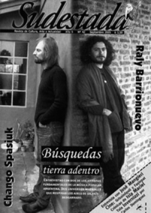

Buscar
Paisajes de la isla Maciel
Lugar de inspiración de los artistas de la ribera del 1900, por sus calles anduvieron Benito Quinquela Martín, Juan de Dios Filiberto y Facio Hebecquer, entre otros. Escenario de poetas, escuela de pungas y sede de los prostíbulos más famosos de la provincia, Maciel oculta también a los ojos prejuiciosos historias de gente que una vez, soñó con un mejor presente para sus hijos.
Edición N° 42
Septiembre 2005
Revista bimensual
Comprar edición impresaSumario
- Raly Barrionuevo y Chango Spasiuk: búsquedas tierra adentro
- Fundamentalistas del aire acondicionado
- La clase obrera va al cine
- Paisajes de la isla Maciel
- Tola Invernizzi: El erotismo mirado por el ojo de la conciencia
- Motines y revoluciones en la viñeta
Compartir Articulo
De lejos, por precaución, algunos curiosos lo vieron detenerse en la Vuelta de Rocha. Andaba armado el tipo, escapando, pistolero de varias cuentas pendientes con la ley. Sólo unas pocas cuadras separaban a la policía del malevo, a quien las calles de La Boca le habían jugado una mala pasada. Ahora, acorralado, de frente al Riachuelo, "Minga-Minga" miraba el horizonte brumoso del río que lo traicionaba, que lo dejaba a merced de su captores, cada vez más cerca. De lejos, por precaución, lo vieron a "Minga-Minga" guardar la pistola atrás del pantalón y tirarse al río. Los curiosos se acercaron a la orilla, lentamente. Lejos, en la bruma, algunos, los más osados, juraban distinguir las brazadas del malevo, alejándose de la orilla y de la policía, que recién llegaba al lugar de los hechos. Peor ya era tarde. "Minga-Minga" nadaba en la bruma, como un fantasma errante, y entre jadeos imaginaba una orilla, y hacía promesas a Dios y a todos los santos a cambio de una ayuda. Y vaya a saber uno por qué capricho celestial, algún santo de turno escuchó los ruegos del jadeante malevo en la bruma y le dio una mano. Sin mucho esfuerzo, "Minga-Minga" alcanzó las orillas de una tierra salvaje, zona de cañaverales interminables y bosques bajos. "Minga-Minga" agradeció la ayuda, y en seguida se escabulló entre las cañas. Pronto, también, olvidó las promesas que esa tarde del 1900 el Riachuelo, según cuenta la leyenda, había escuchado de la boca del primer habitante de la brumosa Isla Maciel.
Alguna vez fue una isla, pero ya no. Desde que entubaron el arroyo Maciel, esa veintena de manzanas que quedaron atrapadas entre las obras municipales y el Riachuelo se transformó en península de Dock Sud. Sin embargo, algo más que los 50 centavos que cuesta la tarifa de los boteros separa a Isla Maciel de tierra firme. Algo que poco tiene que ver con límites geográficos. Para llegar, basta atravesar las curtiembres abandonadas, dejar atrás la harinera, y espiar el horizonte: de frente, se abre paso a la zona maldita de Avellaneda. Para llegar a Maciel hay que seguir, además, un trayecto que incluye pasar por Villa Tranquila y la Lever, dos de los asentamientos más populosos de la zona. A lo largo de las vías casi abandonadas del ferrocarril que hoy sólo funcionan para transportar mercaderías, se alzan las villas. Si uno se para justo donde empieza Isla Maciel, del lado del puerto puede ver todo un paisaje de viviendas derramándose sobre las vías. Del otro lado, el Riachuelo. Enfrente, se divisa el barrio de la Boca, donde se puede llegar abordando alguno de esos botecitos que cruzan el río contaminado hasta la otra orilla en unos cinco minutos, más o menos, según el apuro del pasajero.
A los costados de Maciel, se levantan las antiguas viviendas de chapa y material, pintadas de vivos colores, calles empedradas donde aún quedan huellas del barrio obrero aquel que una vez albergó a los trabajadores inmigrantes que se desempeñaban en las primeras destilerías y usinas de la zona. Más atrás, "los bretes", zona donde se ubican las viviendas más precarias. Las crónicas de los historiadores señalan que la zona fue colonizada por genoveses que llegaron al país a mediados del 1800. Ellos impusieron su idioma, sus costumbres y su arquitectura, semejante al estilo de las casas que habían dejado en Italia. También trajeron del Viejo Continente su oficio -la construcción de barcos- y su espíritu marino. Los únicos forasteros que vivían en la isla eran, en su mayoría, prófugos de la justicia o, como decían los policías de la época, "vagos y mal entretenidos". De allí que creciera en la isla la fama de tugurio y refugio de chorros.
Pero no sólo delincuentes escribieron la historia de Maciel, también fue el escenario elegido ara muchos de los mejores artistas plásticos de la zona para trabajar. El mismísimo Facio Hebecquer, grabador cuya temática se basó en la denuncia social, en la vida obrera y en los linyeras, solía frecuentar las callecitas de la isla en sus años de esplendor, cuando los bodegones cobijaban toda la bohemia de la época. Los artistas de la Ribera cruzaban desde La Boca en busca de nuevos paisajes y allí se quedaban hasta el anochecer, donde se armaban largas tertulias, con banquetes y vino en el legendario bar "La Unión", que estaba al lado del puente viejo de La Boca. Las luces tenues del bodegón iluminaban los incontables duelos de cuchillos entre malevos de sombrero de ala ancha, casi siempre provocados por problemas de polleras con alguna de las chicas de "El Farol Colorado", uno de los más célebres prostíbulos de la zona, que albergaba pupilas francesas y polacas secuestradas por organizaciones de trata y tráfico de mujeres. En esa época, la prostitución era el centro económico de la isla. Todos los comercios vivían de las prostitutas: ellas compraban en el almacén, en la farmacia, en la tienda de ropa. Una publicación de la época da cuenta de que la "Princesa Matilde", la madama de "El Farol Colorado", se encargaba incluso de abonar los jornales de los equipos de médicos higienistas, vacunadores y desinfectadores, que seguramente prestaban atención a las chicas del lugar.
Más de cuarenta eran los prostíbulos que existían en la zona, cuya fama llegaría a alcanzar ribetes míticos en todo el conurbano bonaerense, y el movimiento constante de dinero permitía el puntal pago de prebendas a distribuir entre políticos, cafishos y policías.
Pero la diversión llegaba los fines de semana. El resto del tiempo, los trabajadores llegaban a Maciel en busca de un empleo más o menos permanente. Las crónicas obreras de la época mencionan también a la Anglo Mexican Petrolum Products Company Limited, de capitales ingleses, y sus métodos de explotación: la empresa tenía apuntadores junto a las letrinas, que anotaban el número de chapa de los obreros y descontaban media hora del jornal a los que tardaban más de cinco minutos en la tarea. Para 1917, la misma compañía habilitó un galpón como albergue de desocupados, entre los que había esclavos negros traídos del África y que la empresa ocupaba como clásicos rompehuelgas. Los que trabajaban en la "cámara fría" caían como moscas por la tuberculosis. Los que lograban sobrevivir a esta vida se volcaban a las fondas, las casas de juego o a alguno de los prostíbulos.
El martes es el peor día, las chicas lo saben. Y si es fin de mes, peor todavía. Maciel se abandona, por esas fechas, a una silenciosa cadencia que demora la tarde y que alarga los días hasta hacerlos insoportablemente tediosos. Los martes son los días del recuerdo, las chicas lo saben. Ya no hay clientes en la Maciel, las callecitas parecen menos iluminadas, los colores se han guardado después del fin de semana y no hay risas ni gritos que rompan los grises de la siesta. Es tiempo de sentarse a recordar. Ingrid lo sabe, y sale de "El Farol Colorado" a la hora de la siesta, a buscar su refugio a orillas del Riachuelo. Allí la esperan, puntuales, sus recuerdos. Ingrid se acurruca en su escondite preferido, fuma, y deja que su memoria trabaje. El río es manso los martes también, cómplice de esas tardes interminables, como si también él se abandonara a sus pensamientos por un momento. Ingrid fuma, y sus ojos alcanzan distancias lejanas, no hay un río en sus ojos, hay un océano que la separa de sus recuerdos. Ingrid fuma y recuerda que una vez amó, que amó lejos de "El Farol Colorado", lejos de la Princesa Matilde, que la ayudó desde siempre y que jamás preguntó, quizás porque conocía todas las respuestas de sus chicas, y le dio un trabajo. La Princesa Matilde la ayudó a escapar de su pasado, pero no pudo ofrecerle el refugio perfecto para huir de los recuerdos. Ingrid lo sabe, y por eso fuma, y comparte el humo de su cigarrillo con el río sereno, muerto a sus pies, en la orilla. Ingrid recuerda que una vez amó, lejos de Maciel, y sus manos parecen temblar. En el reflejo de sus ojos, el río se alborota, crece encrespado y un recuerdo naufraga por una lágrima tibia, que la sorprende. Ingrid lo sabe: el martes es el peor día.
A nuestro guía en Maciel le dicen Vivi, y Vivi cuenta que nació y vivió siempre en la isla aunque reconoce que alguna vez se fue, "pero volví al tiempo, porque extrañaba". Él es quien nos lleva a recorrer lo que es la parte antigua de la isla, los comedores populares que funcionan en la zona, un viejo bar que aún conserva la arquitectura de los años cuarenta, con fotos de viejos clientes que dejaron varios salarios en la barra y otras tantas del inolvidable plantel de Dock Sud que consiguió el ascenso. Los viejos son la historia de Maciel, y no hace falta insistir demasiado para escuchar historias fantásticas de un pasado que parece, a la distancia, perdido entre promesas de desarrollo y una crisis que fulminó las esperanzas de la gente. "Si una madre se enteraba que el hijo andaba en algo raro, pobre de él, porque ella misma le daba tal paliza que ése no robaba nunca más", cuenta uno. Otro memorioso recuerda a la murga de Maciel, llamada "Como salga", que se transformó con el tiempo en una de las más importantes de la zona.
¿En qué momento este extraño paisaje, que hospedó a varios centenarios de familias de inmigrantes, que fue creciendo como una ciudad más bien proletaria, se convirtió en refugio marginal para miles de familias? ¿En qué momento la historia de los obreros de Maciel se transformó en la desgracia de fábricas abandonadas, de oscuros callejones, de tiros y ruidos extraños en las noches? Esta vez, los viejos de Maciel no contestan enseguida, piensan, y prefieren destacar aquello que muchos parecen ignorar, justamente aquello que excede la crónica policial: por ejemplo, nos llevaron a visitar la sede de la que en los años treinta fue la biblioteca municipal y hoy es el comedor popular 3 de Febrero, a donde asisten más de 150 chicos a comer. Justo el día de nuestra visita, un enjambre de pibes se amontonaba en la puerta del comedor, preparados para el paseo: iban al cine, después de mucho tiempo. Sus caritas rojas por el frío de la mañana mostraban más entusiasmo que de costumbre. No paraban de corretear para escaparse de la cámara de fotos que un poco los intimidaba y otro poco los sorprendía. Uno de ellos, indignado al verse fotografiado por sorpresa, no dudó en ponerse su traje imaginario de superhéroe para "combatir" los flashes de la cámara. Ellos son, también, la Maciel.
Paisaje de zapatos colgados de los cables, árboles añejos que guardan en silencio los secretos de amores prohibidos, la placita principal que une el pasado bohemio de la isla con un presente oscuro del lugar, la gente de la Maciel desprecia los prejuicios de aquellos que no se acercan por miedo. Y en esta isla, que no es isla, las paradojas también cuentan su historia: caminar por sus angostos pasillos, rodeados de construcciones de chapa y madera, permite observar una organización social totalmente diferente a la que se acostumbra en los barrios de clase media. En la cuna de la inseguridad, no hay inseguridad. En Maciel viven con las puertas abiertas, los chicos juegan todos juntos en la calle, se conocen, comen juntos, salen a pasear, y todos conocen el nombre de su vecino. También juegan al carnaval y realizan sus propias fiestas, fuera del calendario oficial.
Para la policía, Maciel es catalogada como "zona de riesgo", en una de las oficinas de la Comisaría 3° de Avellaneda hay un mapa del partido con puntos rojos y azules. El sector que abarca la Isla esta lleno de puntos rojos. Las vecinas denuncian, en cambio, la represión y la persecución policial contra los pibes de la zona y señalan a los uniformados como los verdaderos responsables de episodios violentos que se suceden, de tanto en tanto, en la isla.
"En la Maciel, a las cuatro, mañana", ordena Mairal. El tipo que escucha el desafío titubea, traga saliva, acepta. Las dos figuras se alejan por las calles de Barracas. Mairal se pierde en la penumbra, firmando con los tacos cada paso sobre el asfalto húmedo. El otro, el quinielero, dobla la esquina y se detiene, transpira, su corazón se agita y murmura en voz baja los delirios del miedo. Se arrepiente y planea escapar, olvidar el duelo, aceptar su cobardía, pero salvarse.
Al amanecer, el quinielero deja pasar su momento. Lejos, en Urquiza lo espera su pasado, su salvación, su mujer, abandonada, sus hijos, que no conoce. Pero no huye. Come, sereno, toma vino tinto y junta sus cosas. Ordena sus cuentas y lleva sus 600 pesos ahorrados y una carta a casa del rengo Felipe. El rengo Felipe escucha y no pregunta.
Para Mairal, las horas que lo separan de las cuatro del día siguiente no terminan nunca. Para el otro, el quinielero, el día se desliza a una velocidad vertiginosa. La hora llega, y ahí está Mairal, de pie, con el Riachuelo en uno de sus flancos. El quinielero lo sabe, no tiene escapatoria. Mairal aguarda en silencio, el sol de la tarde rebota en su cuchillo. Entonces, lo impensado. El quinielero corre contra su desafiante, avanza a toda velocidad, en un grito, cuchillo en mano corta distancias. Los filos y los cuerpos chocan. Un poco de polvo se levanta del suelo. Un poco de sangre embarra el suelo seco. El quinielero apoya la rodilla en el suelo barroso de sangre, su sangre. Mairal lo mira desde arriba, mientras su cuchillo gotea sangre, su sangre. El quinielero mira el tajo en el pecho, feo, interminable, y cae.
En ese momento, en la orilla de enfrente, el rengo Felipe juega 600 pesos al 17...
El resto de la nota en Sudestada n°42
Comentarios
Lucía Fariña
Elizabeth Van Perdek
Articulos más vistos


LIBRERÍA SUDESTADA

Colección infantil

Distribuidora de Libros

Suscripción

Sudestada en URUGUAY

Otros articulos de esta edición
 Viñetas sueltas
Viñetas sueltas
Motines y revoluciones en la viñeta
Un universo de hechos y personajes surgen en el interior de una viñeta. ¿Pero qué sucede con la viñeta misma? ...
Raly Barrionuevo y Chango Spasiuk: búsquedas tierra adentro
Buscar, de algún modo, es interesarse por algo o por alguien que está más allá de nuestro limitado universo de ...
 Plástica
Plástica
Tola Invernizzi: El erotismo mirado por el ojo de la conciencia
Una conversación con Tola Invernizzi, pintor y mito de Uruguay.
Fundamentalistas del aire acondicionado
 Cinestada
Cinestada
La clase obrera va al cine
Mucho se ha escrito y debatido en el campo del arte sobre la relación, intrínseca o no, que debe existir ...